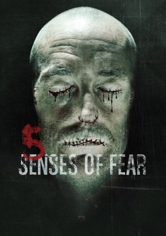

#4876 Chilling Visions: 5 Senses of Fear
 gesehen am 26.11.2016
gesehen am 26.11.2016
 
 IMDB-Wertung: 5.0 / 10
IMDB-Wertung: 5.0 / 10  Metascore: 0
Metascore: 0 
Fünf makabre Kurzgeschichten von fünf verschiedenen Regisseuren über die menschlichen Sinne, verbunden durch das mysteriöse Unternehmen Watershed, das dunkle Absichten hegt. In „Smell“ macht ein mysteriöses Parfüm Seth Kyle unwiderstehlich für Frauen und verleiht seiner Karriere unerwartete Schübe. Doch das Parfüm hat auch unangenehme Nebenwirkungen. In „See“ träufelt sich ein verschrobener Augenarzt die Augenflüssigkeit seiner Patienten ein. Nach einem Unfall trifft ein blinder Junge in einer Holzhütte in „Touch“ auf einen Psychopathen. „Taste“ verbindet die fünf Segmente miteinander, als ein junger Hacker in einem ominösen Unternehmen zum Vorstellungsgespräch kommt und es bald bereuen soll, das Jobangebot ausgeschlagen zu haben. In „Listen“ schließlich bringt ein Musikstück seinen Hörern den Tod.
Jahr: 2013
Dauer: 87 Minuten
FSK: 18
Land: USA Studio: Chiller NetworkTonspuren: DTS - ,
Untertitel: Deutsch,
Auflösung: 1080p (1920x1080) Größe: 7782 MB
Genre: Horror
Regisseur: Eric England, Nick Everhart, Emily Hagins, Jesse Holland, Miko Hughes, Andy Mitton
Drehbuch: Paul Scheuring
Soundtrack:
Darsteller:
- Symba als Lacey Sharp
- Danae Nason als Sarah
- Nicholas Tucci als Office Drone
- Ace Marrero als Police Officer
- Hilary Greer als Miss Margaret
- J.P. Valenti als Office Employee
- Kerry McGann als Mom
- Nalini Sharma als Test Subject 2
- Morgan West als Spencer Masters
- Alexander Hauck als Office Coworker
 Robert Sciglimpaglia als Limo Driver
Robert Sciglimpaglia als Limo Driver- Doug Roland als Aaron Whitworth
- Lowell Byers als Travis / Killer
- Eric Nyenhuis als Marlboro Man
- Sean Carmichael als Office Coworker
- Aubrey Wakeling als Dr. Beck
- Rachel Fleischer als Piano Player 1
- Joseph Varca als Jesse
- Eric Alejandro Reis als Mustache Man
- Ellen Clifford als Grace
- Sean Leser als Office Clerk
- Kevin Kate als Boss
- Michelle Rae als Bloody Woman
- Samm Allen als Test Subject 3
- Ox Baker als The Butcher
- Michael Goodman als Surgeon
- Aaron Sandler als Gutenberg
- Daniel Brennan als Dan
- Phil 'Skippy' Adams als Cafe Shop Patron
- Caleb Barwick als Henry
- Ariana Gavrilis als Human Trafficking Victim
- Corey Scott Rutledge als Seth Kyle
- John Doolan als Wounded Man / Opening credits victim
- Logan Brown als Test Subject 1
- Ted Yudain als Dr. Tom
- Gwen Kosak als Office co-worker
- Miranda Evans als Office Coworker
- Michael Robert Eck als Lewis
- Thea Trinidad als Chelsea
- Andy Mitton als Piano Player 3
- Lance Kramer als Andy
- James Byrnes als Bouncer
- Marisa Hunter als Attractive Co-Worker
- Dara Smith als Office Coworker
- Debra Jans als Amy
- Gino Pereira als Office Clerk
- Tracy Michael Lynch als Chef
- Kevin McCauley als Boss
- Heather Mi als Hot Jogger
- John Armitage als Office Clerk
Datei: X:\FSK18-2013\Chilling Visions 5 Senses of Fear (2013, FSK18, 1920x1080).mkv seit 25.11.2016
Festplatte: FSK18
 Es gibt insgesamt 26 Filme in der Gruppe 'FSK18-2013'
Es gibt insgesamt 26 Filme in der Gruppe 'FSK18-2013'